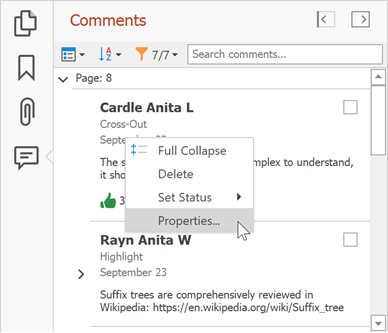

Annotations
You can use annotations to highlight important text the author should change, for example, when you review a document.
The PDF Viewer allows you to create text annotations (sticky notes) and text markup annotations (text highlights). All document annotations are displayed in the Comments panel.

Create Annotations
Use commands on the Comment ribbon page to create text markup annotations and sticky notes. Enable the selection tool in the Text group and select the text that should have an annotation. Click Sticky Note to place the sticky note in a document.

You can also add text markup annotations from the context menu.

You can change the default settings for annotation tools. Click the drop-down arrow in the corresponding annotation tool in the Text ribbon group and specify the color and opacity.

Edit Annotations
Double-click the annotation in the Comments panel to edit its contents.

Right-click the annotation in the document or Comments navigation page and select Properties... to invoke the Annotation Properties dialog.


This dialog allows you to change the annotation parameters. Click Set as Default to use the new settings as the default settings for all annotations.
Add Replies and Reviews to the Annotation
You can use the Comments navigation pane to add replies and set review statuses for the annotations.
Select an annotation on the pane, enter text in the invoked editor, and click Reply to add the reply to the annotation.

To specify the review status, right-click an annotation, select Set Status, and set the status. Select None to remove the review status.

Sort and Filter Annotations
You can sort and filter comments by page, author, date, type, check and review status.
Click the Sort button on the Comments navigation page to sort annotations and comments.

Click the Filter button to apply the filter. This filter is applied to the annotations in the pane and in the document.

Use the Search comments.. field to show annotations that contain the search text.
Remove Annotations
Right-click an annotation in the document or Comments navigation pane and select Delete in the context menu to remove the annotation. You can also select an annotation and press the Delete key.